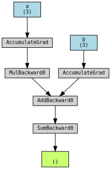
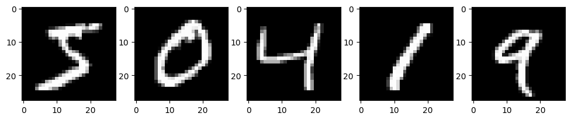
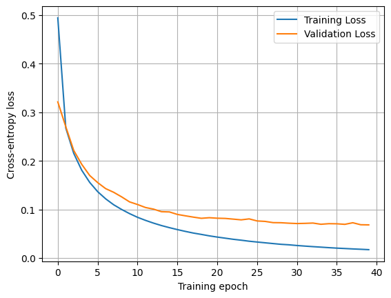
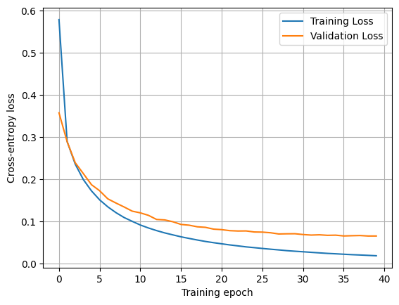

import torch
a_tensor = torch.tensor([1.0, 2.0, 3.0])
b_tensor = torch.tensor([4.0, 5.0, 6.0])
type(a_tensor)torch.Tensor
PyTorch is an automatic differentiation framework that, essentially, is your NumPy for machine learning and anything that involves exact derivatives. PyTorch natively supports hardware accelerators, such as GPUs, that can significantly speed up matrix multiplication operations, as well as distributed computing to handle large workloads.
The main element of PyTorch is a tensor, which behaves very similarly to NumPy arrays.
import torch
a_tensor = torch.tensor([1.0, 2.0, 3.0])
b_tensor = torch.tensor([4.0, 5.0, 6.0])
type(a_tensor)torch.TensorWe can perform any kind of operations over tensors, from matrix to element-wise operations.
a_tensor + 3tensor([4., 5., 6.])a_tensor @ b_tensor # dot producttensor(32.)Tensors have requires_grad, a property that indicates whether gradients should be computed with respect to their values. By default, this is set to False.
a_tensor.requires_gradFalseHowever, if we set it to True, we will be able to compute the gradient of scalar quantities with respect to the tensor. Let’s consider a simple example where we add the two tensors each multiplied by a different factor: \[y = \sum_i 2a_i + b_i\]
a_tensor.requires_grad = True
b_tensor.requires_grad = True
result = torch.sum(2*a_tensor + b_tensor)
result.backward()The result of the sum, result, is also a tensor. When we call the backward method, it computes the gradient over all the tensors that have been involved in its calculation. The resulting gradients are stored in the tensors themselves.
We expect the gradient with respect to each entry of \(\mathbf{a}\) to be \(2\), and \(1\) for \(\mathbf{b}\).
a_tensor.gradtensor([2., 2., 2.])b_tensor.gradtensor([1., 1., 1.])Subsequent gradient computations with respect to the same tensor will add the new gradient to the previous one. We must take this into account and reset the gradients manually when needed.
Computing the gradient of another quantity with respect to the same tensors will modify its gradient. Consider the sum of all the entries of \(\mathbf{a}\). The gradient with respect to itself is 1 for every entry. This value will be added to the previously existing gradient, although \(\mathbf{b}\) will not be affected.
a_sum = torch.sum(a_tensor)
a_sum.backward()
a_tensor.grad # 2 + 1 = 3tensor([3., 3., 3.])b_tensor.grad # Still 1tensor([1., 1., 1.])To reset the gradients of a tensor, we can manually set them to None or zero.
a_tensor.grad.zero_()
b_tensor.grad = None
a_tensor.grad, b_tensor.grad(tensor([0., 0., 0.]), None)When we set requires_grad=True, PyTorch builds a computational graph that records every operation we perform. When we call .backward(), PyTorch traverses this graph in reverse, from the object we call it from to the beginning, applying the chain rule from calculus to compute exact derivatives (not numerical approximations!).
Let’s see this by repeating the previous example, although this way we’ll do it step-by-step in order to make everything very explicit and easy to visualize.
# Let's trace through the computation step by step
x = 2 * a_tensor
y = x + b_tensor
z = torch.sum(y) # This is the previous `result`
z.backward()The computational graph looks like:
a_tensor → [mul by 2] → x ────┐
├→ [add] → y → [sum] → z
b_tensor ─────────────────────┘When we call z.backward(), PyTorch traverses the graph backwards to compute the derivatives:
By chain rule: \(\frac{dz}{da} = \frac{dz}{dy}\frac{dy}{dx}\frac{dx}{da} = [2, 2, 2]\) and \(\frac{dz}{db} = \frac{dz}{dy}\frac{dy}{db} = [1, 1, 1]\)
from torchviz import make_dot
z = torch.sum(2 * a_tensor + b_tensor)
make_dot(z, params={'a': a_tensor, 'b': b_tensor})
We will now replicate the same training we did in the previous notebook, but using pytorch and its built-in functions. Let’s just do a short recap on the task, data, metric and model!
Let’s start by the task and the data. We will use again the MNIST dataset, which is composed of hand-written digit images from 0 to 9. The task will be to classify those images into their respective digits.
from torchvision.datasets import MNIST
from torchvision.transforms import ToTensor
from torch.utils.data import DataLoader, random_split
torch.manual_seed(7)
mnist_train = MNIST(root="data", train=True, download=True, transform=ToTensor())
mnist_test = MNIST(root="data", train=False, download=True, transform=ToTensor())
print(mnist_train)
print(mnist_test)Dataset MNIST
Number of datapoints: 60000
Root location: data
Split: Train
StandardTransform
Transform: ToTensor()
Dataset MNIST
Number of datapoints: 10000
Root location: data
Split: Test
StandardTransform
Transform: ToTensor()In machine learning, it is very important that we become familiar with the data that we are dealing with. In this case, we may plot some example images.
import matplotlib.pyplot as plt
def plot_image(ax, image: torch.Tensor, label: int | None = None):
"Plot a single image."
ax.imshow(image.squeeze(), cmap="gray")
if label is not None:
ax.set_title(f"Pred: {label}")
def plot_examples(dataset):
"Plot 5 examples from the MNIST dataset."
_, axes = plt.subplots(1, 5, figsize=(12, 3))
for i, ax in enumerate(axes):
image, label = dataset[i]
plot_image(ax, image)
plt.show()
plot_examples(mnist_train)
The images are \(28 \times 28\) pixels in grayscale, and the labels are a single scalar.
image, label = mnist_train[0]
image.shape, label(torch.Size([1, 28, 28]), 5)Now let’s split the training set into training and validation. This will allow us to evaluate the model’s generalization capabilities during training and tune its hyper-parameters.
train_data, validation_data = random_split(mnist_train, [55000, 5000])Finally, we will create the data loaders for the training, validation, and testing data sets. These objects will take care of spliting the data into batches, given that 60000 images may be too much to process at once.
batch_size = 128
train_loader = DataLoader(train_data, batch_size, shuffle=True)
val_loader = DataLoader(validation_data, batch_size, shuffle=False)
test_loader = DataLoader(mnist_test, batch_size, shuffle=False)Opposite to what we did in the previous notebook, where we considered a simplified regression scenario with an MSE loss, we will here properly set a classification problem with ten classes (digits from 0 to 9). Therefore, we will use the cross-entropy loss function \[\mathcal{L}_{\text{CE}} = -\frac{1}{n}\sum_i^n \mathbf{y}_i^T\log(f(\mathbf{x}_i))\,,\] where \(\mathbf{y}_i\) is the one-hot-encoding vector of the true label, and \(f(\mathbf{x}_i)\) provides the predicted probability for sample \(\mathbf{x}_i\) to belong to each of the classes.
def cross_entropy_loss(predictions, targets):
"""Compute the cross-entropy loss between predictions and targets for a given batch."""
target_preds = predictions[torch.arange(len(predictions)), targets]
return -torch.mean(torch.log(target_preds))Besides the loss function, we can compute other performance indicators that may not need to be differentiable, like the accuracy or the error rate.
def accuracy(predictions, targets):
"""Compute the accuracy of predictions given the true targets."""
return (predictions.argmax(dim=1) == targets).float().mean()The last ingredient for our learning task is a model that will encode the program to solve the task. In this case, we will start with a simple fully-connected neural network. In these networks, we distinguish between three types of layers:
Here, \(\mathbf{x}\) denotes the activations of the neurons in the preceding layer, and the connection strength between each of those neurons is encoded in the weight vector \(\mathbf{\omega}\). The neuron incorporates a bias \(b\), and the resulting value of the linear transformation \(z\) is known as the logit. Finally, the resulting activation of the neuron \(x\) is determined by applying the non-linear activation function \(\xi\).
We will start by initializing the parameters for our linear operations.
input_size = 28 * 28
hidden_size = 500
n_classes = 10
# Input to hidden
W1 = torch.randn(input_size, hidden_size) / torch.sqrt(torch.tensor(input_size))
W1.requires_grad_()
b = torch.zeros(hidden_size, requires_grad=True)
# Hidden to output
W2 = torch.randn(hidden_size, n_classes) / torch.sqrt(torch.tensor(hidden_size))
W2.requires_grad_();The activation functions can take any form, so long as it is non-linear, and they can be used to obtain the desired output. In this case, we will use the rectified linear unit (ReLU) activation function in the hidden layer \[\text{ReLU}(z) = \max(0, z)\,,\] and a softmax activation function in the output layer to normalize the logits as a probability distribution \[\text{softmax}(z_i) = \frac{e^{z_i}}{\sum_k e^{z_k}}\,.\]
def relu(x):
"Rectified linear unit activation function."
return torch.maximum(x, torch.tensor(0.0))
def softmax(x):
"Softmax activation function."
return torch.exp(x) / torch.exp(x).sum(axis=-1, keepdim=True)Now we can define our model.
def model(x):
"Neural network model."
x = x.reshape(-1, 28 * 28) # Flatten the image
z = x @ W1 + b # First linear transformation
x = relu(z) # Hidden layer activation
z = x @ W2 # Second linear transformation
return softmax(z) # Output layer activationWe have all the necessary ingredients to train a machine learning model for digit recognition. Let’s put everything together in a training loop.
The typical learning procedure is:
from tqdm.auto import tqdm
learning_rate = 0.1
n_epochs = 40
training_loss = []
validation_loss = []
for _ in tqdm(range(n_epochs)):
epoch_loss = 0
for images, labels in train_loader:
preds = model(images)
loss = cross_entropy_loss(preds, labels)
loss.backward()
# Now we perform the gradient descent step. We make sure torch does not compute any further gradient here.
with torch.no_grad():
# Update parameters
W1 -= W1.grad * learning_rate
b -= b.grad * learning_rate
W2 -= W2.grad * learning_rate
# Reset gradients
W1.grad.zero_()
b.grad.zero_()
W2.grad.zero_()
epoch_loss += loss.item()
training_loss.append(epoch_loss / len(train_loader))
# Computing the validation loss, we don't want any gradients computed here neither.
with torch.no_grad():
epoch_loss = 0
val_preds, val_targets = [], []
for images, labels in val_loader:
preds = model(images)
loss = cross_entropy_loss(preds, labels)
epoch_loss += loss.item()
val_preds.append(preds)
val_targets.append(labels)
val_acc = accuracy(torch.cat(val_preds), torch.cat(val_targets))
validation_loss.append(epoch_loss / len(val_loader))
print(f"Training Loss: {training_loss[-1]:.4f}, Validation Loss: {validation_loss[-1]:.4f}, Accuracy: {val_acc:.4f}")Training Loss: 0.4941, Validation Loss: 0.3212, Accuracy: 0.9180
Training Loss: 0.2675, Validation Loss: 0.2702, Accuracy: 0.9310
Training Loss: 0.2153, Validation Loss: 0.2213, Accuracy: 0.9418
Training Loss: 0.1807, Validation Loss: 0.1928, Accuracy: 0.9492
Training Loss: 0.1556, Validation Loss: 0.1698, Accuracy: 0.9578
Training Loss: 0.1365, Validation Loss: 0.1552, Accuracy: 0.9612
Training Loss: 0.1218, Validation Loss: 0.1428, Accuracy: 0.9612
Training Loss: 0.1096, Validation Loss: 0.1353, Accuracy: 0.9646
Training Loss: 0.1000, Validation Loss: 0.1259, Accuracy: 0.9674
Training Loss: 0.0914, Validation Loss: 0.1155, Accuracy: 0.9670
Training Loss: 0.0838, Validation Loss: 0.1101, Accuracy: 0.9698
Training Loss: 0.0775, Validation Loss: 0.1039, Accuracy: 0.9716
Training Loss: 0.0718, Validation Loss: 0.1006, Accuracy: 0.9724
Training Loss: 0.0668, Validation Loss: 0.0953, Accuracy: 0.9724
Training Loss: 0.0625, Validation Loss: 0.0948, Accuracy: 0.9736
Training Loss: 0.0585, Validation Loss: 0.0897, Accuracy: 0.9748
Training Loss: 0.0548, Validation Loss: 0.0868, Accuracy: 0.9758
Training Loss: 0.0514, Validation Loss: 0.0841, Accuracy: 0.9742
Training Loss: 0.0486, Validation Loss: 0.0817, Accuracy: 0.9756
Training Loss: 0.0456, Validation Loss: 0.0829, Accuracy: 0.9764
Training Loss: 0.0431, Validation Loss: 0.0819, Accuracy: 0.9768
Training Loss: 0.0408, Validation Loss: 0.0815, Accuracy: 0.9754
Training Loss: 0.0386, Validation Loss: 0.0800, Accuracy: 0.9760
Training Loss: 0.0367, Validation Loss: 0.0785, Accuracy: 0.9762
Training Loss: 0.0346, Validation Loss: 0.0805, Accuracy: 0.9752
Training Loss: 0.0329, Validation Loss: 0.0763, Accuracy: 0.9766
Training Loss: 0.0313, Validation Loss: 0.0753, Accuracy: 0.9774
Training Loss: 0.0297, Validation Loss: 0.0728, Accuracy: 0.9770
Training Loss: 0.0282, Validation Loss: 0.0726, Accuracy: 0.9782
Training Loss: 0.0272, Validation Loss: 0.0716, Accuracy: 0.9786
Training Loss: 0.0257, Validation Loss: 0.0709, Accuracy: 0.9784
Training Loss: 0.0245, Validation Loss: 0.0713, Accuracy: 0.9790
Training Loss: 0.0234, Validation Loss: 0.0719, Accuracy: 0.9798
Training Loss: 0.0224, Validation Loss: 0.0694, Accuracy: 0.9788
Training Loss: 0.0213, Validation Loss: 0.0707, Accuracy: 0.9798
Training Loss: 0.0203, Validation Loss: 0.0704, Accuracy: 0.9792
Training Loss: 0.0196, Validation Loss: 0.0693, Accuracy: 0.9786
Training Loss: 0.0187, Validation Loss: 0.0726, Accuracy: 0.9790
Training Loss: 0.0180, Validation Loss: 0.0684, Accuracy: 0.9792
Training Loss: 0.0172, Validation Loss: 0.0682, Accuracy: 0.9790plt.plot(training_loss, label="Training Loss")
plt.plot(validation_loss, label="Validation Loss")
plt.xlabel("Training epoch")
plt.ylabel("Cross-entropy loss")
plt.grid()
plt.legend()<matplotlib.legend.Legend at 0x7d6bcce99ee0>
PyTorch offers a compact suite to define and train neural networks. The main elements are Modules, functionals, and optimizers.
Let’s implement the same neural network as before using the tools provided by oytorch, starting by the architecture. Neural networks in pytorch must inherit from the Module class and implement a forward method. The Module class takes care of implementing a reciprocal backward method for us.
import torch.nn as nn
import torch.nn.functional as F
class FullyConnected(nn.Module):
def __init__(self, input_size, hidden_size, output_size):
super().__init__()
self.linear_1 = nn.Linear(input_size, hidden_size)
self.linear_2 = nn.Linear(hidden_size, output_size, bias=False)
def forward(self, x):
x = x.reshape(-1, 28 * 28)
z = self.linear_1(x)
x = F.relu(z)
z = self.linear_2(x)
return z # Notice we do not implement the softamx activation
model = FullyConnected(28 * 28, 500, 10)Notice that we have not implemented the last activation function in the output layer. This is because PyTorch’s cross entropy loss expects the logits, as it implements an optimized calculation for the loss. See the docs for further details.
To train the model, we will use the stochastic gradient descent optimizer, in order to faithfully reproduce the results.
optimizer = torch.optim.SGD(model.parameters(), lr=learning_rate)Finally, we can write the training loop.
training_loss = []
validation_loss = []
for _ in tqdm(range(n_epochs)):
epoch_loss = 0
for images, labels in train_loader:
logits = model(images)
loss = F.cross_entropy(logits, labels)
loss.backward()
optimizer.step()
optimizer.zero_grad()
epoch_loss += loss.item()
training_loss.append(epoch_loss / len(train_loader))
with torch.no_grad():
epoch_loss = 0
val_preds, val_targets = [], []
for images, labels in val_loader:
logits = model(images)
loss = F.cross_entropy(logits, labels)
epoch_loss += loss.item()
val_preds.append(F.softmax(logits, dim=1))
val_targets.append(labels)
val_acc = accuracy(torch.cat(val_preds), torch.cat(val_targets))
validation_loss.append(epoch_loss / len(val_loader))
print(f"Training Loss: {training_loss[-1]:.4f}, Validation Loss: {validation_loss[-1]:.4f}, Accuracy: {val_acc:.4f}")Training Loss: 1.5480, Validation Loss: 0.8777, Accuracy: 0.8242
Training Loss: 0.6585, Validation Loss: 0.5453, Accuracy: 0.8660
Training Loss: 0.4787, Validation Loss: 0.4516, Accuracy: 0.8794
Training Loss: 0.4125, Validation Loss: 0.4061, Accuracy: 0.8866
Training Loss: 0.3767, Validation Loss: 0.3788, Accuracy: 0.8938
Training Loss: 0.3534, Validation Loss: 0.3584, Accuracy: 0.8972
Training Loss: 0.3360, Validation Loss: 0.3434, Accuracy: 0.9022
Training Loss: 0.3218, Validation Loss: 0.3305, Accuracy: 0.9064
Training Loss: 0.3100, Validation Loss: 0.3213, Accuracy: 0.9084
Training Loss: 0.2998, Validation Loss: 0.3100, Accuracy: 0.9118
Training Loss: 0.2904, Validation Loss: 0.3035, Accuracy: 0.9148
Training Loss: 0.2821, Validation Loss: 0.2941, Accuracy: 0.9166
Training Loss: 0.2742, Validation Loss: 0.2866, Accuracy: 0.9176
Training Loss: 0.2668, Validation Loss: 0.2811, Accuracy: 0.9196
Training Loss: 0.2597, Validation Loss: 0.2743, Accuracy: 0.9218
Training Loss: 0.2531, Validation Loss: 0.2659, Accuracy: 0.9246
Training Loss: 0.2469, Validation Loss: 0.2613, Accuracy: 0.9268
Training Loss: 0.2406, Validation Loss: 0.2548, Accuracy: 0.9300
Training Loss: 0.2351, Validation Loss: 0.2509, Accuracy: 0.9322
Training Loss: 0.2296, Validation Loss: 0.2445, Accuracy: 0.9342
Training Loss: 0.2243, Validation Loss: 0.2403, Accuracy: 0.9356
Training Loss: 0.2193, Validation Loss: 0.2357, Accuracy: 0.9374
Training Loss: 0.2145, Validation Loss: 0.2307, Accuracy: 0.9380
Training Loss: 0.2100, Validation Loss: 0.2261, Accuracy: 0.9386
Training Loss: 0.2056, Validation Loss: 0.2215, Accuracy: 0.9402
Training Loss: 0.2013, Validation Loss: 0.2173, Accuracy: 0.9408
Training Loss: 0.1972, Validation Loss: 0.2137, Accuracy: 0.9428
Training Loss: 0.1934, Validation Loss: 0.2092, Accuracy: 0.9430
Training Loss: 0.1895, Validation Loss: 0.2060, Accuracy: 0.9444
Training Loss: 0.1859, Validation Loss: 0.2031, Accuracy: 0.9446
Training Loss: 0.1824, Validation Loss: 0.1993, Accuracy: 0.9454
Training Loss: 0.1789, Validation Loss: 0.1971, Accuracy: 0.9466
Training Loss: 0.1755, Validation Loss: 0.1937, Accuracy: 0.9472
Training Loss: 0.1723, Validation Loss: 0.1908, Accuracy: 0.9474
Training Loss: 0.1691, Validation Loss: 0.1879, Accuracy: 0.9488
Training Loss: 0.1661, Validation Loss: 0.1859, Accuracy: 0.9490
Training Loss: 0.1633, Validation Loss: 0.1826, Accuracy: 0.9506
Training Loss: 0.1604, Validation Loss: 0.1799, Accuracy: 0.9518
Training Loss: 0.1577, Validation Loss: 0.1776, Accuracy: 0.9518
Training Loss: 0.1550, Validation Loss: 0.1748, Accuracy: 0.9524plt.plot(training_loss, label="Training Loss")
plt.plot(validation_loss, label="Validation Loss")
plt.xlabel("Training epoch")
plt.ylabel("Cross-entropy loss")
plt.grid()
plt.legend()<matplotlib.legend.Legend>
Modern machine-learning models, especially neural networks, involve performing millions (or billions) of linear algebra operations (mostly matrix multiplications as we did before) on large datasets. These operations are inherently parallel: the same computation (e.g. multiplying or summing numbers) must be repeated independently for many data elements.
A CPU (Central Processing Unit) is designed for general-purpose, sequential tasks: it has a few powerful cores optimized for flexibility and branching logic. In contrast, a GPU (Graphics Processing Unit) contains thousands of simpler cores optimized for performing the same operation on many data points simultaneously. This makes it ideal for the highly parallel workloads that dominate machine learning.
When training a neural network, every update of the weights requires propagating data forward and gradients backward through the network. Both steps involve large matrix–vector multiplications, which GPUs can accelerate dramatically. Tasks that would take hours or days on a CPU can often be completed in minutes on a GPU.
Moreover, the implementation in GPU with pytorch is very easy, let’s see an example with the model and data above. First, let’s check how long does a forward pass in the CPU:
# We get a new batch of images from the loader
images = next(iter(train_loader))[0]
model = FullyConnected(28 * 28, 500, 10)181 μs ± 17.5 μs per loop (mean ± std. dev. of 7 runs, 1,000 loops each)Now let’s do the same in the GPU. For that we need to “send” the previous images and model to the GPU:
images_cuda = images.to('cuda')
model_cuda = model.to('cuda')66 μs ± 178 ns per loop (mean ± std. dev. of 7 runs, 10,000 loops each)As you can see, already a single forward pass through the model via the GPU more than 2x faster. This difference is even bigger is we, for instance, consider a much bigger batch size:
batch_size = 1000
train_loader_big = DataLoader(train_data, batch_size, shuffle=True)# We get a new batch of images from the loader
images = next(iter(train_loader_big))[0]
model = FullyConnected(28 * 28, 500, 10)655 μs ± 4.35 μs per loop (mean ± std. dev. of 7 runs, 1,000 loops each)images_cuda = images.to('cuda')
model_cuda = model.to('cuda')73.4 μs ± 307 ns per loop (mean ± std. dev. of 7 runs, 10,000 loops each)So while the GPU running time barely increased, the CPU one increase by a huge factor! This is the reason of GPU usage in ML and why Nvidia stock has gone to the moon in the past years ;) .
Using the tools you have learned in this notebook, train a simple neural network to classify anomalous diffusion trajectories. To create the dataset, you will first need to install the andi_datasets library via pip install andi-datasets. You can then use:
from andi_datasets.datasets_theory import datasets_theory
from andi_datasets.utils_trajectories import normalize
DT = datasets_theory()dataset = DT.create_dataset(T = 100, N_models = 3000, exponents = [0.2], models = [0, 1, 2])
device = 'cuda' # Choose your device!
trajs_dataset = torch.tensor(normalize(dataset[:, 2:]), dtype=torch.float32, device=device)
labels_dataset = torch.tensor(dataset[:, 0], dtype = int, device = device)
# Let's randomly permute the dataset:
perm = torch.randperm(trajs_dataset.shape[0])
trajs_dataset = trajs_dataset[perm]
labels_dataset = labels_dataset[perm]Next, separate the dataset into train (let’s call X_a to input and Y_a to labels) and test set (same but X_e, Y_e). It will be useful for this to inspect the shape of the variables. You can then choose an 80/20 separation.
### Your code hereNow let’s create the Dataloaders with pytorch
from torch.utils.data import TensorDataset
# Create TensorDatasets
train_data = TensorDataset(X_a, Y_a)
eval_data = TensorDataset(X_e, Y_e)
# Create DataLoaders
train_loader = DataLoader(train_data, batch_size=64, shuffle=True)
val_loader = DataLoader(eval_data, batch_size=64, shuffle=False)From here on, follow what we have done for MNIST, adapt the model to the right dimensions of the problem (i.e. input and output dimension) and train your models.
Tips: - The model we use above contains a single hidden layer, which may not get too good results here. You can add a couple of extra layers and see if that get’s you better results. - You may need to train for longer epochs and also lower a bit the learning rate. - Keep track of the accuracy of your model, so that you have a sense on how its performing. Let’s target at least and accuracy of 50%. - Use the confusion matrix we learned about in previous notebooks to see where the model is making mistakes!
Bonus: look into the pytorch documentation and implement the Adagrad and Adam optimizers. Compare the results, which one gives a better results?